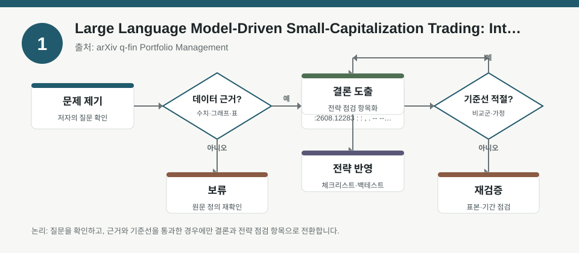
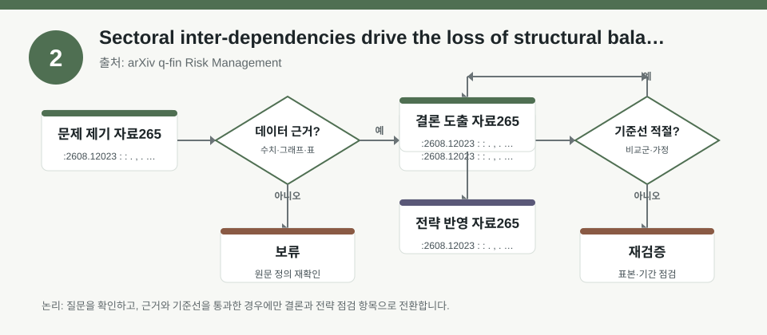
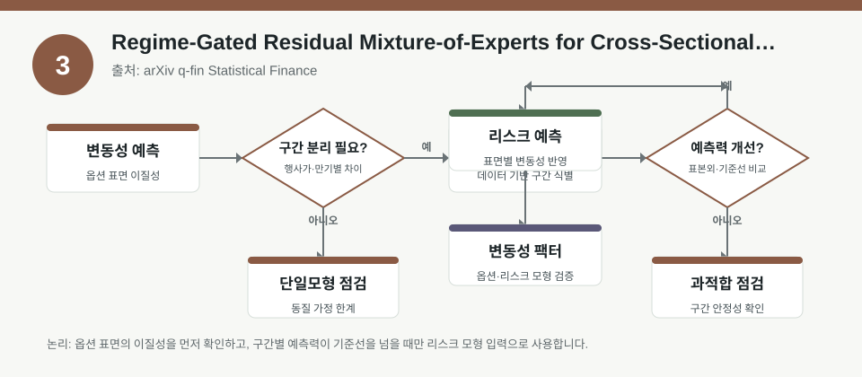

핵심 요약
- 결론: 최신 3개 자료는 “예측 신호의 정교화”보다 “리스크 가정과 포트폴리오 구조의 검증”이 더 중요하다는 점을 공통으로 보여줍니다.
- 원칙: 수치·성능·유효성은 메타데이터만으로 확정하지 말고, 표본 구간·거래비용·리밸런싱·레짐 변화 여부를 반드시 확인해야 합니다.
주목할 자료
| 번호 | 자료 | 출처 | 원문 | 핵심 내용 | 데이터 포인트 | 리스크/한계 |
|---|---|---|---|---|---|---|
| 1 | Large Language Model-Driven Small-Capitalization Trading: Integrating Financial News Sentiment, Macroeconomic Indicators, and Technical Signals | arXiv q-fin Portfolio Management | 원문 보기 | LLM 기반 뉴스 감성·거시지표·기술신호를 결합해 소형주 포트폴리오를 구성하는 접근입니다. | 예측 위험을 aleatoric/epistemic으로 분해하는 점, 거시·뉴스·기술 신호의 결합 방식은 확인 포인트입니다. | 수익·샤프·회전율·거래비용·소형주 유동성 제약은 메타데이터에 없어 검증이 필요합니다. |
| 2 | Sectoral inter-dependencies drive the loss of structural balance in signed financial networks | arXiv q-fin Risk Management | 원문 보기 | 부문 간 상호의존성과 부호가 있는 네트워크를 통해 시장 균형 붕괴와 전이 위험을 해석합니다. | 섹터 연결성, 협력·갈등의 부호 구조, 시스템적 전이 위험이 핵심 데이터 포인트입니다. | 네트워크 정의, 샘플링 방법, 시계열 안정성, 한국 시장 적용 가능성은 따로 확인해야 합니다. |
| 3 | Regime-Gated Residual Mixture-of-Experts for Cross-Sectional Volatility Forecasting | arXiv q-fin Statistical Finance | 원문 보기 | 레짐 정보를 활용한 교차단면 변동성 예측 모형으로, 레짐 주입 위치가 학습 안정성과 예측력에 영향을 주는지 다룹니다. | 5일 실현변동성, 1,027개 미국 주식, 레짐 게이팅/잔차 MoE 구조가 확인 포인트입니다. | 레짐 판별 오류, 미국 주식 중심 표본, 한국 KOSPI/KOSDAQ 이전 가능성은 검증이 필요합니다. |
자료별 상세
1. Large Language Model-Driven Small-Capitalization Trading: Integrating Financial News Sentiment, Macroeconomic Indicators, and Technical Signals

- 핵심: 뉴스 감성만 쓰기보다 거시지표와 기술신호를 함께 넣어 소형주 포트폴리오의 신호 편향을 줄이려는 구조입니다.
- 데이터 포인트: aleatoric과 epistemic 위험을 분해해 “데이터 내 불확실성”과 “모형 불확실성”을 따로 다룹니다.
- 리스크: 성과 지표, 거래비용, 공매도·슬리피지, 소형주 유동성 제약은 메타데이터에 없어 확인이 필요합니다.
- 투자전략 반영 예시: 한국 투자자는 KOSDAQ 소형주를 볼 때 뉴스 감성, 원·달러 환율, 금리, 변동성, 업황 지표를 분리 점검하는 체크리스트로 활용할 수 있습니다.
- 실행 예시: 백테스트 시 신호별 기여도, 레짐별 성과, 거래비용 반영 전후 차이, 포트폴리오 회전율을 같은 표로 비교해 보세요.
2. Sectoral inter-dependencies drive the loss of structural balance in signed financial networks

- 핵심: 섹터 간 연결이 강해질수록 개별 종목보다 “전이 경로”가 중요해져, 네트워크 관점의 리스크 해석이 필요합니다.
- 데이터 포인트: 부호가 있는 금융 네트워크에서 균형 붕괴를 추적하므로, 단순 상관계수보다 방향성과 갈등 구조를 봐야 합니다.
- 리스크: 네트워크 생성 규칙, 기간별 안정성, 이벤트 전후 구조 변화, 한국 섹터로의 일반화 가능성은 검증해야 합니다.
- 투자전략 반영 예시: 한국 투자자는 KOSPI 대형주와 KOSDAQ 성장주를 따로 보되, 반도체·2차전지·바이오처럼 연동이 큰 섹터의 동시 충격 가능성을 점검할 수 있습니다.
- 실행 예시: 섹터별 상관행렬만 보지 말고, 환율·금리·원자재 충격이 어느 섹터에서 먼저 전이되는지 사전 체크 항목으로 두세요.
3. Regime-Gated Residual Mixture-of-Experts for Cross-Sectional Volatility Forecasting

- 핵심: 변동성은 레짐에 따라 달라지므로, 레짐 정보를 언제 어떻게 넣는지가 예측 안정성의 관건입니다.
- 데이터 포인트: 5일 실현변동성과 다수 종목 교차단면을 사용해, 레짐 게이팅과 잔차형 MoE의 배치를 비교하는 구조입니다.
- 리스크: 레짐 오분류, 학습 불안정, 미국 주식 중심 표본, 한국 시장의 변동성 구조 차이는 반드시 확인해야 합니다.
- 투자전략 반영 예시: 한국 투자자는 KOSPI/KOSDAQ에서 저변동 레짐과 고변동 레짐을 나눠, 업종 익스포저와 현금 비중 점검 규칙을 다르게 둘 수 있습니다.
- 실행 예시: 백테스트에서 동일 신호를 레짐별로 분리해 성과·낙폭·회전율을 비교하고, 변동성 급등 구간의 예측 오차를 따로 기록하세요.
팩터·리스크·포트폴리오 관점
- 핵심: 세 자료 모두 “신호 생성”보다 “팩터 노출의 분해, 섹터 전이, 레짐 적합성”이 성과와 위험을 좌우한다는 점을 시사합니다.
- 검수: 한국 투자자 관점에서는 KOSPI/KOSDAQ, 원·달러 환율, 금리, 인플레이션, 변동성, 신용·규제 리스크를 함께 넣어야 하며, 표본 편향과 거래비용 반영 여부를 반드시 확인해야 합니다.
정리
- 결론: 포트폴리오 해석의 중심은 단일 예측값이 아니라 신호·레짐·섹터·유동성의 결합 구조입니다.
- 다음 확인: 각 자료의 표본 기간, 수익률 정의, 리밸런싱 주기, 거래비용, 그리고 한국 시장 재현 가능성을 우선 검증하세요.